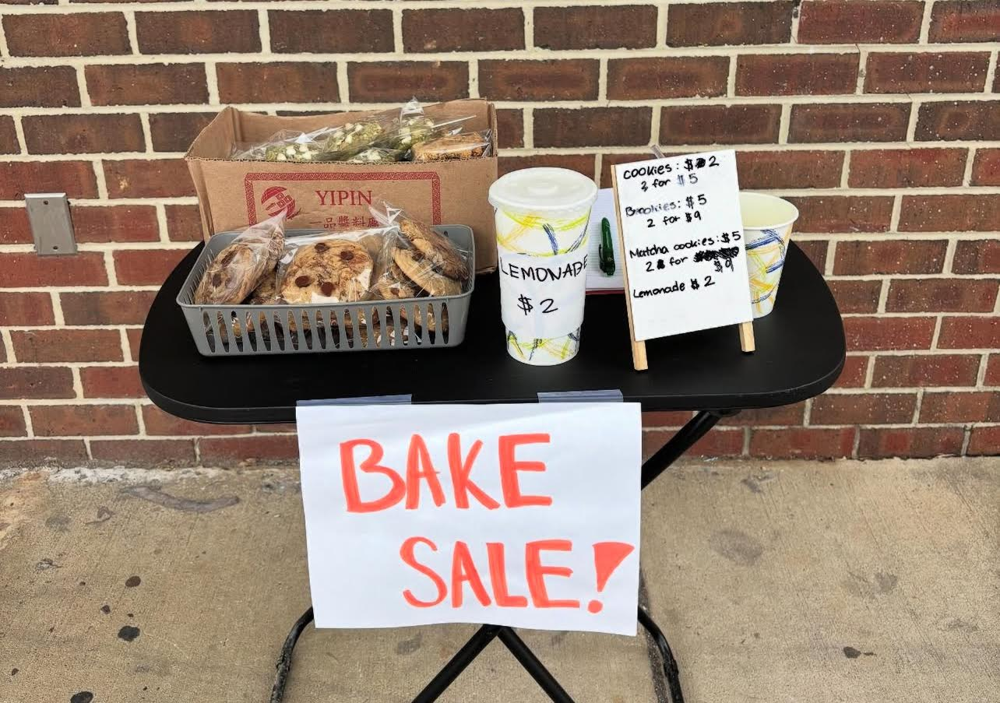

club bake sale
we made over 30 brookies for a bake sale for our school club badminton club. we sold all of the brookies and made over $200. we were able to replace the badminton's broken equipment with new ones as well as providing more birdies. we were also able to start something new for the club, which was badminton tournaments! students are able to participate in the tournaments and win $$$ so that they can fund their own badminton equipment or school supplies they need. it also encourages and motivates students to participate in more activities and sports.

4kidz fundraiser
we made over 200+ cookies under the 4kidz nonprofit organization! we were able to raise over $1000 for the University of Maryland Children's Hospital in hopes to fund for new equipment and supplies for them. we're dedicated to fostering hope, positivity, and improve childhood experience for hospitalized children worldwide. we will continue to raise funds and awareness for these children because they deserve everything.